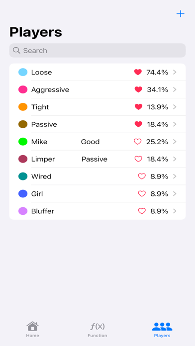
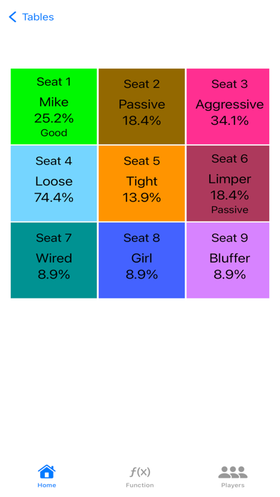
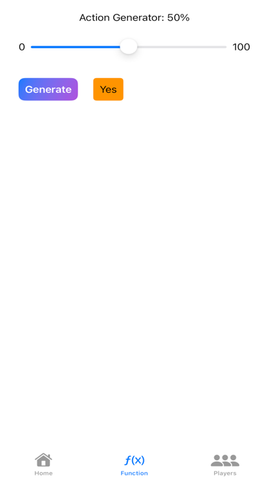

Gardez vos adversaires en mémoire
Enregistrez les noms et les notes des joueurs, attribuez des couleurs, marquez des favoris et recherchez un joueur pour vous rafraîchir la mémoire.
VOTRE COMPAGNON DE TEXAS HOLD’EM
Transformez vos observations en notes organisées. Avec pokerNote, gardez vos éventails de mains, vos compositions de table et vos sessions à portée de main.
Gratuit sur l’App Store · Par Michael Yang
Pour iPhone et iPad · iOS 17.6+

DANS POKERNOTE
Captures officielles de l’App Store. Les écrans sont en anglais ; leur apparence peut varier selon la version de l’application.


PLUS QU’UNE SIMPLE NOTE
Enregistrez les noms et les notes des joueurs, attribuez des couleurs, marquez des favoris et recherchez un joueur pour vous rafraîchir la mémoire.
Construisez l’éventail de mains d’un joueur dans une matrice visuelle. Consultez les combinaisons et pourcentages sélectionnés, avec des préréglages par position pour commencer.
Créez des tables de cash game ou de tournoi de 5 à 10 places. Attribuez les joueurs enregistrés aux sièges et conservez des notes sur la table.
Notez les caves, ajouts, montants de sortie, horaires et lieux. Consultez le bénéfice, la durée totale et le taux horaire moyen par mois, par année ou pour toutes les sessions.
Exportez une sauvegarde JSON de vos données ou des fichiers CSV pour Numbers et Excel. Utilisez les sauvegardes JSON pour restaurer vos données.
Ouvrez Joueurs, touchez +, ajoutez un nom et une note, puis touchez Ajouter un joueur. Ajoutez une couleur, un favori ou un éventail de mains selon vos besoins.
HISTORIQUE DES SESSIONS
Gardez une trace du lieu, de la durée et du résultat de chaque session. pokerNote rassemble les détails et les résultats de vos sessions pour vous permettre de consulter votre historique au fil du temps.
Ouvrez Sessions et touchez +. Ajoutez la date, les heures de début et de fin, le lieu, le type de jeu et les enjeux pour situer chaque session.
Saisissez votre cave, vos ajouts et votre montant de sortie. Le résultat correspond au montant de sortie moins la cave et les ajouts. Modifiez une session si un détail doit être corrigé.
Passez entre Tout, Mois et Année pour consulter le gain ou la perte totale, le temps de jeu total et le taux horaire moyen de la période choisie. Exportez les sessions en CSV pour les examiner dans un tableur.
ASSISTANCE POKERNOTE
Des réponses pratiques sur les joueurs, les sessions et les sauvegardes.
Contacter l’assistance ↗Ouvrez Joueurs et touchez +. Saisissez le nom du joueur et votre note, puis touchez Ajouter un joueur. Vous pouvez aussi choisir une couleur, marquer le joueur comme favori ou définir un éventail de mains.
Ouvrez Sessions et touchez +. Saisissez les détails : cave, ajout, montant de sortie, horaires et lieu. Utilisez les filtres Tout, Mois ou Année pour consulter vos sessions et leur résumé.
Ouvrez Fonction → Sauvegarde et restauration. Choisissez Exporter la sauvegarde pour enregistrer un fichier JSON dans Fichiers, ou Exporter en CSV pour sélectionner les joueurs, sessions, lieux, tables ou sièges à utiliser dans un tableur.
Dans Fonction → Sauvegarde et restauration, choisissez Restaurer la sauvegarde et sélectionnez un fichier JSON. Vérifiez son contenu avant de confirmer. La restauration remplace toutes les données actuelles et ne peut pas être annulée. Exportez d’abord une sauvegarde pour conserver vos données actuelles. Les fichiers CSV ne permettent pas de restaurer les données.
Les données sont stockées localement sur votre appareil ; il n’y a pas de synchronisation cloud automatique. Exportez une sauvegarde JSON pour conserver une copie séparée ou la restaurer sur un autre appareil. La restauration remplace les données actuelles de l’appareil de destination.
L’application est disponible en anglais, espagnol, chinois traditionnel et chinois simplifié. Le français et le japonais sont des traductions du site web.
PARLONS-EN
Pour toute question, signalement de problème ou remarque, indiquez le modèle de l’appareil, la version d’iOS et les étapes ayant conduit au problème. Évitez d’envoyer des notes privées sur les joueurs, sauf si elles sont nécessaires pour expliquer le problème.